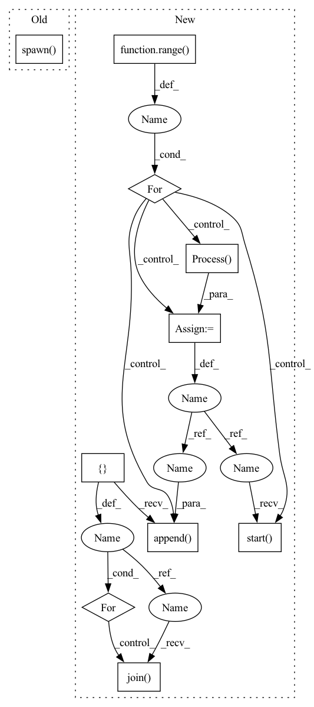

Pattern ID :18435

Before Change
os.environ["BAGUA_SERVICE_PORT"] = str(find_free_port())
results = [Result() for _ in range(nprocs)]
mp.spawn(
fn,
nprocs=nprocs,
args=(nprocs, results),
)
return results
After Change
mp = multiprocessing.get_context("spawn")
results = [Result() for _ in range(nprocs)]
processes = []
for i in range(nprocs):
p = mp.Process(
target=fn,
args=(i, nprocs, results, env),
)
p.start()
processes.append(p)
for p in processes:
p.join(timeout=60)
return results
In pattern: SUPERPATTERN
Frequency: 3
Non-data size: 10
Instances
Fragment ID: 60236144
Project Name: baguasys/bagua
Commit Name: a9529bef66e367884316a2b2ebc917ff35bf6334
Time: 2021-08-26
Author: 45031995+wangraying@users.noreply.github.com
File Name: tests/comm/test_communicator.py
M Class Name: AnonimousClass
N Class Name: AnonimousClass
M Method Name: run_test_locally(1)
N Method Name: run_test_locally(1)
M Parent Class:
N Parent Class:
M File Name: tests/comm/test_communicator.py
N File Name: tests/comm/test_communicator.py
M Start Line: 106
M End Line: 122
N Start Line: 115
N End Line: 138
'>
Before Change
os.environ["MASTER_PORT"] = str(find_free_port())
os.environ["BAGUA_SERVICE_PORT"] = str(find_free_port())
mp.spawn(
run_model,
nprocs=nprocs,
)
if __name__ == "__main__":
unittest.main()
After Change
}
mp = multiprocessing.get_context("spawn")
processes = []
for i in range(nprocs):
p = mp.Process(target=run_model, args=(i, env))
p.start()
processes.append(p)
for p in processes:
p.join(timeout=60)
if __name__ == "__main__":
unittest.main()
'>
Fragment ID: 60236143
Project Name: baguasys/bagua
Commit Name: a9529bef66e367884316a2b2ebc917ff35bf6334
Time: 2021-08-26
Author: 45031995+wangraying@users.noreply.github.com
File Name: tests/torch_api/test_async_model_average.py
M Class Name: TestAsyncModelAverage
N Class Name: TestAsyncModelAverage
M Method Name: test_algorithm(1)
N Method Name: test_algorithm(1)
M Parent Class: unittest.TestCase
N Parent Class: unittest.TestCase
M File Name: tests/torch_api/test_async_model_average.py
N File Name: tests/torch_api/test_async_model_average.py
M Start Line: 62
M End Line: 76
N Start Line: 68
N End Line: 87
'>
Before Change
port = _find_free_port()
dist_url = f"tcp://127.0.0.1:{port}"
mp.spawn(
_distributed_worker,
nprocs=num_gpus_per_machine,
args=(
main_func, world_size, num_gpus_per_machine,
machine_rank, backend, dist_url, args
),
daemon=False,
)
else:
main_func(*args)
After Change
port = _find_free_port()
dist_url = f"tcp://127.0.0.1:{port}"
processes = []
for rank in range(num_gpus_per_machine):
p = mp.Process(
target=_distributed_worker,
args=(
rank, main_func, world_size, num_gpus_per_machine,
machine_rank, backend, dist_url, args))
p.start()
processes.append(p)
for p in processes:
p.join()
else:
main_func(*args)
'>
Fragment ID: 60236142
Project Name: megvii-basedetection/yolox
Commit Name: 9ac8895af03200bd32cfe2db42c1d23dd914b3f3
Time: 2021-07-26
Author: ruinmessi@gmail.com
File Name: yolox/core/launch.py
M Class Name: AnonimousClass
N Class Name: AnonimousClass
M Method Name: launch(7)
N Method Name: launch(7)
M Parent Class:
N Parent Class:
M File Name: yolox/core/launch.py
N File Name: yolox/core/launch.py
M Start Line: 58
M End Line: 66
N Start Line: 58
N End Line: 69